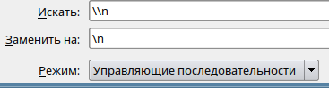

Иногда, если пользоваться редактором как универсальным текстовым буфером обмена, может возникнуть ситуация, что выхлоп какой-то консольной команды (например в Pyton или в Ansible) содержат строки с символами "\n". Не с кодами переноса строк, а с символами "\n". И нужно в KWrite/Kate сделать замену этих символов на настоящий перенос строк. Как это сделать?
Нужно включить режим замены (Правка - Заменить) и выставиль следующие параметры:
Выгдядит в интерфейсе это вот так:

После нажатия "Заменить" или "Заменить все" строки, содержащие символы "\n", будут заменены на настоящие переносы строк.